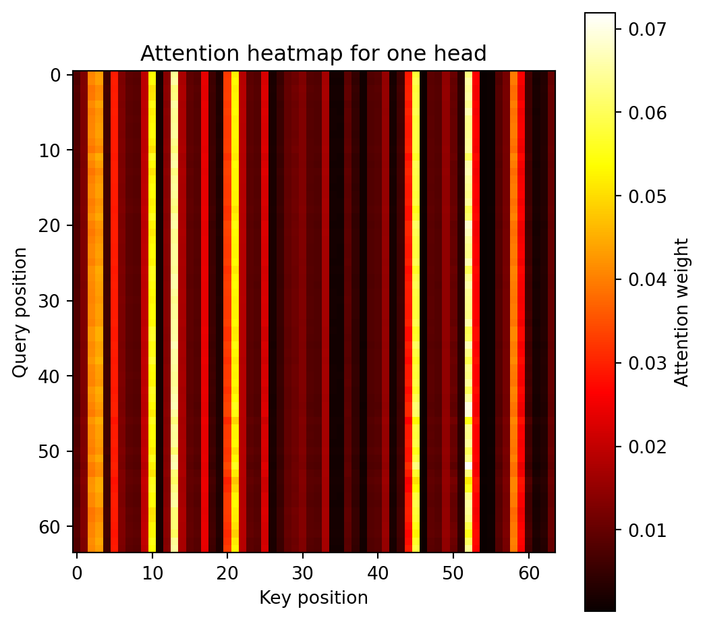
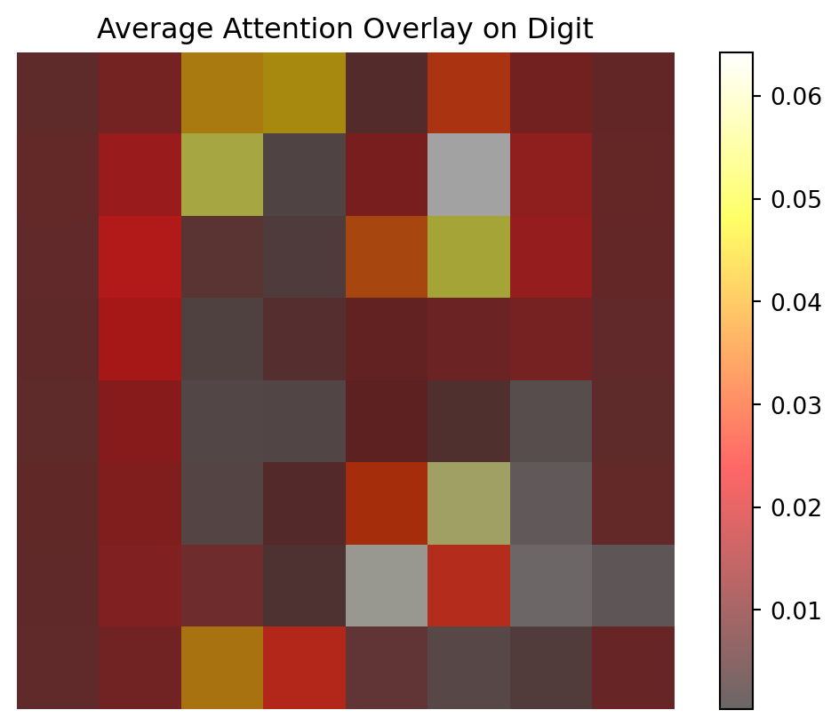
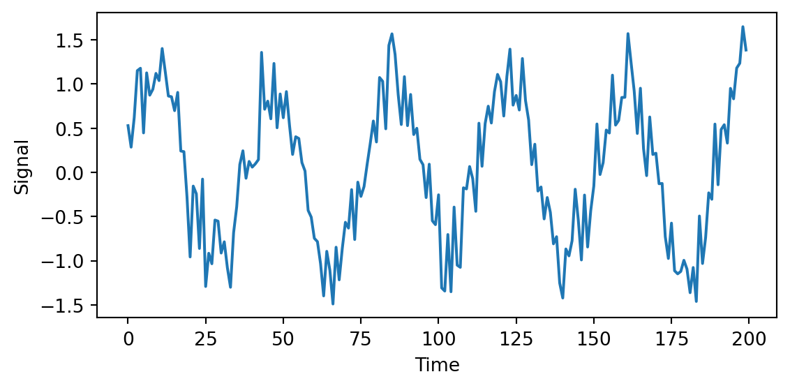
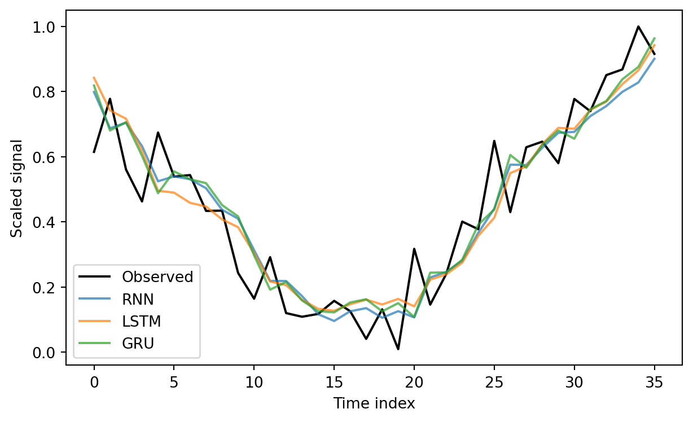

#pip install torch torchvision12 Deep Learning
12.1 Deep Learning (DL)
This section was prepared by Matthew Anzalone: final semester MsQE (Master of Science in Quantitative Economics) student. His research interests include community cohesion as predictors of economic outcomes, market concentration, and health economics.
12.1.1 Early DL History
Deep learning owes its existence to the original 1943 work of Warren McCulloch and Walter Pitts, who built the first artificial, electronic neural network. Although, it was not until the 1970s that deep learning got its start, following the work of Alexy Ivakhnenko and V. G. Lapa in 1967. 1979 saw the development of the first functional deep learning model in Kunihiko Fukushima’s “Neocognitron”.
12.1.2 Modern DL History
However, this was just the primordial roots of deep learning. It was not until 1989, when Yann LeChun, et al. implemented backpropagation into neural networks that the deep learning we are familiar with today got its start. There were still hurdles, though. The hardware of the 1990s was not up to speed with what was required to run deep learning models at anything resembling an acceptable speed. The modern advent and improvement of GPUs (graphical processing units), especially by Nvidia, allowed for the eventual explosion of machine learning and AI that we observe today. Such GPUs allow for running calculations simultaneously and in parallel, thus increasing speed and making calculations feasible.
12.1.3 Neural Networks vs. Deep Learning
How are deep learning models different from neural networks? Neural networks are not different from deep learning models, and are, in fact, the principle building block of DL models. The scope and depth of the neural networks are the only thing that separates neural networks from Deep learning models. DL models are defined (according to IBM) as the training of neural network models with at least four layers.
The advantage of DL models comes from the intermediate, hidden layers, where most of the delicate comparisons take place. These intermediate layers allow for a much more rigorous understanding of the input data, concentrating the essence of the interactions from the broader surface-layer nodes’ values to increasingly accurate outputs (depending on the number of intermediate layers).
Because deep learning is an extension of neural networks, training DL models also rely on backpropagation and gradient descent.
12.1.4 Types of Deep-learning Models
12.1.4.1 Convolutional Neural Networks
In essence, this method concentrates information down from a large number of nodes to a smaller sub-selection of nodes, that is, it creates convolution layers. These convolution layers are then used to preserve information on a larger scale, resulting in dimension reduction and allowing for efficient calculations from large, multi-factor datasets. One of the things this method is historically used for is image classification and recognition, as it allows one to break up images into many large parts, rather than looking at each pixel individually.
12.1.4.2 Recurrent Neural Networks
This method allows for sequential calculations from one node to the next. Therefore, it is useful for time-sequenced data or language recognition. For example, in a subject such as education economics, data might be years of education for individuals over time. Each additional year of education might depend on the GPA of the last year of education (IE: one will pursue a bachelors degree if they receive consistently high grades in an associates degree). Therefore, the model would need to understand each previous year in sequence to be able to predict the eventual final years of education for an individual.
12.1.4.3 Generative adversarial networks
These are used to generate new data, based on some example training data. The implementation is extremely interesting, in that the model pits two neural networks against one another until the testing network cannot accurately decide whether the data is artificially generated or part of the training set. This sounds amazing, but training such a model is, according to IBM, difficult and unstable. This method can be used with image generation and, arguably, seals our collective fate for eventually not being able to tell real pictures from AI-generated ones.
12.1.5 Current AI Surge and Transformer Models
The current surge in AI infrastructure and consumer AI models can be traced back to the 2017 Google paper “Attention is All You Need”. (Nearly all of the authors of the paper went on to found, co-found, or become CEO of highly successful AI companies). The paper outlines a new architecture for deep learning: the transformer model. The new methods are responsible for the existence of GPT (generative pre-trained transformer) models, such as ChatGPT. The advantage of the transformer model is its attention layers, which specify which nodes are closely related to other nodes. That is, the attention layer specifies which parts of the data interact with one another, meaning it can focus on certain interactions as more important to final output, increasing efficiency and accuracy. According to IBM, “…transformers don’t use recurrent layers; a standard transformer architecture uses only attention layers and standard feedforward layers, leveraging a novel structure inspired by the logic of relational databases.” That is, transformer models are more efficient than the recurrent neural networks which they succeeded.
12.1.6 Why Transformers?
Recurrent networks can only focus on one part of a sequence at a time, making them less scalable. However, transformers allow for a model to examine an entire sequence at once, and then focus on the most meaningful interactions for final output. This ability of transformers fits perfectly with the function of GPUs, as it allows for the simultaneous calculations of the transformer to run on the simultaneous hardware of the GPU.
The attention mechanism of transformers runs in a few successive steps:
+ reading data and converting into vector features,
+ determining interactions between vector features,
+ assigning interactions scores for feature combinations,
+ and finally assigning an attention weights for features.
This continues until the model arrives at accurate attention weights for final outputs, via backpropagation and gradient descent.
Queries and keys are used to compare a data sequence. The query is used as the starting point for retrieval of attention interactions. Keys represent the value of the token or “cell”. The output is then scaled by the attention weight, and the final output is passed on to the next node/layer, or the final output. (Tokens are how models like LLMs store information, such as words.)
This method can be extended to examples of image classification, which is used here to demonstrate the meaning of attention, query, and key.
12.1.7 Pytorch and implementation of transformer model
12.1.7.0.1 Installation of Pytorch
Go to the installation and startup documentation page and follow the installation steps, then run the code below, as outlined by the installation page.
The documentation states that a NVidia GPU is suggested for GPU processing, so this overview will use the CPU installation for accessibility. The GPU version can be installed by selecting one of the “CUDA” options on the installation page, then running the given pip-command in Python. This install command will run on both Mac and Windows (the Linux command is slightly different). When selecting the CPU option on Mac, the option reads “default”.
To verify whether torch installed correctly, the suggested test code from the installation page is run below, showing that the torch data-structure is functional.
import torch
x = torch.rand(5, 3)
print(x)tensor([[0.1455, 0.2358, 0.9807],
[0.9555, 0.3236, 0.4520],
[0.5870, 0.3663, 0.9071],
[0.0139, 0.0278, 0.8538],
[0.7208, 0.7525, 0.2415]])12.1.8 Implementation of Transformer Model
12.1.8.1 Data Importation
To highlight the uses and behaviors of the transformer model and attention weighting, we will use the same digit data used in the neural network implementation example. The model will aim to classify the given hand-drawn digits, and will focus on certain pixels in the 8x8 grid as more important in reaching a final output/conclusion as to the correct classification. This uses a simplified example generated from ChatGPT (fitting as the exact model demonstrated will ultimately create the code).
Below, the digit data is imported from the sklearn module, and is then split into training and testing subsets using the sklearn splitting package. Importantly, the train-test split is then passed to the torch datatype, which makes it usable in the transformer model. The “tensors” are simply another type of array which is used in AI architecture.
import torch
import torch.nn as nn
from sklearn.datasets import load_digits
from sklearn.model_selection import train_test_split
from sklearn.preprocessing import StandardScaler
from torch.utils.data import TensorDataset, DataLoader
import matplotlib.pyplot as plt
import random
random.seed(12345)
X, y = load_digits(return_X_y=True)
X = StandardScaler().fit_transform(X)
X_train, X_test, y_train, y_test = train_test_split(
X, y, test_size=0.2, random_state=42
)
X_train = torch.tensor(X_train, dtype=torch.float32).view(-1, 64, 1)
X_test = torch.tensor(X_test, dtype=torch.float32).view(-1, 64, 1)
y_train = torch.tensor(y_train, dtype=torch.long)
y_test = torch.tensor(y_test, dtype=torch.long)
train_loader = DataLoader(
TensorDataset(X_train, y_train),
batch_size=64,
shuffle=True)
test_loader = DataLoader(TensorDataset(X_test, y_test), batch_size=128)This code builds the transformer model implementation for this example. It uses 4 heads, where each head represents one type of interaction between the given queries and keys. For example, one head could compare the shade of a key pixel to the query pixel, where another head might compare proximity. It is unspecified what type of interaction the model chooses for each of the heads. d_model describes the number of values in each token vector. num_layers represents the number of attention layers used in the model, where each attention layer has multiple linear layers and normalization layers, where each layer has at least 32 nodes (specified in d_model).
class TinyVisionTransformer(nn.Module):
def __init__(
self,
d_model=32,
nhead=4,
num_layers=2,
num_classes=10,
seq_len=64
):
super().__init__()
self.embedding = nn.Linear(1, d_model)
self.pos_encoding = nn.Parameter(
torch.zeros(1, seq_len, d_model)
)
encoder_layer = nn.TransformerEncoderLayer(
d_model=d_model,
nhead=nhead,
batch_first=True
)
self.transformer = nn.TransformerEncoder(
encoder_layer, num_layers=num_layers
)
self.classifier = nn.Linear(
d_model, num_classes
)
def forward(self, x):
x = self.embedding(x) + self.pos_encoding[:, :x.size(1), :]
x = self.transformer(x)
x = x.mean(dim=1)
return self.classifier(x)Now we train the model, prioritizing using the GPU “cuda” method, and the CPU method if GPU is not available. It will successively train over multiple runs, lowering the loss value each time, using entropy to compare the predicted values to actual values. lr=1e-3 is the learning rate of the model.
device = torch.device("cuda" if torch.cuda.is_available() else "cpu")
model = TinyVisionTransformer().to(device)
optimizer = torch.optim.Adam(model.parameters(), lr=1e-3)
criterion = nn.CrossEntropyLoss()
for epoch in range(5):
model.train()
total_loss = 0
for xb, yb in train_loader:
xb, yb = xb.to(device), yb.to(device)
optimizer.zero_grad()
preds = model(xb)
loss = criterion(preds, yb)
loss.backward()
optimizer.step()
total_loss += loss.item()
print(f"Epoch {epoch+1}, loss={total_loss/len(train_loader):.4f}")Epoch 1, loss=2.3507
Epoch 2, loss=2.2739
Epoch 3, loss=2.1617
Epoch 4, loss=2.0774
Epoch 5, loss=2.0076Then, the test accuracy is calculated as a decimal representing the proportion of successful classifications to total classifications.
model.eval()
correct = 0
with torch.no_grad():
for xb, yb in test_loader:
preds = model(xb.to(device)).argmax(dim=1)
correct += (preds.cpu() == yb).sum().item()
print(f"Test accuracy: {correct / len(y_test):.3f}")Test accuracy: 0.236Below is shown a figure of the attention scores between each of the 64 pixels (the query) to the same pixels (as a key). The figure represent a single “head” of the model. The tendency to show a vertical line represents the fact that certain pixels are important to classification no matter which pixel is queried.
encoder_layer = model.transformer.layers[0]
def get_attention_weights(layer, x):
with torch.no_grad():
attn_output, attn_weights = layer.self_attn(
x, x, x, need_weights=True, average_attn_weights=False
)
return attn_weights
sample_img = X_test[0:1].to(device) # (1, 64, 1)
embedded = model.embedding(sample_img) + model.pos_encoding[:, :64, :]
attn_weights = get_attention_weights(encoder_layer, embedded)
# First sample, first head
attn = attn_weights[0, 0].cpu().numpy() # shape: (64,64)
plt.figure(figsize=(6,6))
plt.imshow(attn, cmap='hot', interpolation='nearest')
plt.title("Attention heatmap for one head")
plt.xlabel("Key position")
plt.ylabel("Query position")
plt.colorbar(label="Attention weight")
plt.show()
This graph overlays the heatmap from the previous graph onto an 8x8 graph like that of the digits. It averages out the attention scores for each query pixel which gives the overall importance of each pixel in determining which digit each image is classified as. The lighter pixels in this graph represent the vertical lines of high attention from the heatmap above.
attn_avg = attn.mean(axis=0) # average over query positions -> 64
attn_img = attn_avg.reshape(8,8)
plt.imshow(X_test[0].view(8,8).cpu().numpy(), cmap='gray')
plt.imshow(attn_img, cmap='hot', alpha=0.6)
plt.title("Average Attention Overlay on Digit")
plt.axis("off")
plt.colorbar()
plt.show()
12.1.9 Conclusion
Deep learning models are varied, and cutting edge, having only picked up speed in the past 20 years or so. Much of their surge in popularity and use can be attributed to the transformer-attention method, unveiled in 2017 by Google. This led to increased efficiency of DL models, far surpassing CNN and RNN models, allowing them to create the GPT models which are now seen in almost every aspect of industry and academics. The attention method assigns an attention weight to interactions between input queries and keys, and allows the model to efficiently focus on relevant data interactions. This can be applied to the image classification example above, extending the example already given in the neural network section.
12.1.10 Further Readings
12.1.10.1 History and Overview
History of Neural Networks and Deep Learning
Google paper (Attention is all You Need)
12.1.10.2 Implementation with Pytorch
Pytorch Package and Documentation
12.2 Neural Networks for Data with Temporal Dependence
Many real-world datasets are sequential, where earlier observations influence what happens later. Examples include electricity demand over hours, temperature across days, and stock prices through trading sessions. Such data exhibit temporal dependence, meaning that successive observations are not independent.
Traditional supervised learning models, such as linear regression and feedforward neural networks, treat each observation as if it were independent. When applied directly to time-ordered data, they fail to capture how information evolves through time. A prediction for one step does not reflect patterns that unfolded earlier.
To learn from sequential patterns, we need models that can remember what has already occurred and use that information to improve predictions. Neural networks designed for temporal dependence achieve this by introducing internal states that are updated as the sequence unfolds. The simplest such model is the recurrent neural network (RNN), which forms the basis for more advanced architectures such as long short-term memory (LSTM) and gated recurrent unit (GRU) networks.
12.2.1 Recurrent Neural Networks (RNNs)
To model data with temporal dependence, a neural network must be able to retain information about what has happened previously. A recurrent neural network (RNN) accomplishes this by maintaining an internal hidden state that evolves over time. The hidden state acts as a summary of all past inputs and is updated as new data arrive.
At each time step \(t\), an RNN receives an input vector \(x_t\) and produces a hidden state \(h_t\) according to
\[ h_t = \tanh(W_h h_{t-1} + W_x x_t + b_h), \]
where \(W_h\) and \(W_x\) are weight matrices and \(b_h\) is a bias term. The output at the same step can be expressed as
\[ \hat{y}_t = \sigma(W_y h_t + b_y), \]
with \(\sigma(\cdot)\) representing an activation or link function. Because \(h_t\) depends on \(h_{t-1}\), the network can in principle capture relationships across time.
The initial hidden state \(h_0\) must be specified before the sequence starts. In most applications, \(h_0\) is set to a vector of zeros with the same dimension as \(h_t\), allowing the network to begin without prior memory. This default works well because the recurrent updates quickly overwrite the initial state as new inputs arrive. In some advanced or stateful applications, \(h_0\) can instead be learned during training or carried over from the final state of a previous sequence, enabling the model to preserve continuity across batches.
Before training can begin, an objective function must be defined to measure how well the network predicts the target sequence. For a series of observations \(\{(x_t, y_t)\}_{t=1}^T\), the total loss is typically the sum of stepwise prediction errors, \[ \mathcal{L} = \sum_{t=1}^T \ell(y_t, \hat{y}_t), \] where \(\ell\) is a suitable loss such as mean squared error for regression or cross-entropy for classification. The gradients of \(\mathcal{L}\) with respect to the network parameters are then computed and used to update the weights through backpropagation through time.

Figure 12.1 illustrates how an RNN can be unrolled across time steps, showing that the same set of weights is reused at each step. The hidden state serves as a bridge between past and present inputs, allowing the network to accumulate information through time.
Training an RNN is done by backpropagation through time (BPTT), which unrolls the network over all time steps and applies gradient descent. However, when sequences are long, the repeated multiplication of gradients can lead to vanishing or exploding gradients. This makes it difficult for a standard RNN to learn long-term dependencies, limiting its ability to remember events far in the past.
In many applications, temporal dependence is only one part of the problem. Alongside the time-varying input \(x_t\), there may be additional covariates \(z\) that describe static or slowly changing characteristics, such as a station ID, region, or weather condition. These can be incorporated into an RNN by concatenating them with \(x_t\) at each time step or by feeding them into separate layers whose outputs are combined with the recurrent representation. In practice, the design depends on whether such covariates are constant across time or vary together with the sequence.
To address the limitations of standard RNNs, researchers developed architectures that explicitly control how information is remembered or forgotten. The most influential of these is the LSTM network, which introduces a structured memory cell and gating mechanisms to stabilize learning over longer sequences.
12.2.2 Long Short-Term Memory (LSTM)
The main limitation of a standard RNN is its inability to retain information over long sequences. During backpropagation through time, gradients tend to either vanish or explode, preventing effective learning of long-term dependencies. The Long Short-Term Memory (LSTM) network, proposed by Hochreiter and Schmidhuber (1997), was designed to overcome this problem.
An LSTM introduces a separate cell state \(C_t\) that acts as a highway for information to flow across time steps, along with gating mechanisms that regulate what to remember and what to forget. The gates use sigmoid activations to produce values between 0 and 1, allowing the network to scale information rather than overwrite it.
The key update equations of an LSTM are
\[ \begin{aligned} f_t &= \sigma(W_f [h_{t-1}, x_t] + b_f), \\ i_t &= \sigma(W_i [h_{t-1}, x_t] + b_i), \\ \tilde{C}_t &= \tanh(W_C [h_{t-1}, x_t] + b_C), \\ C_t &= f_t \odot C_{t-1} + i_t \odot \tilde{C}_t, \\ o_t &= \sigma(W_o [h_{t-1}, x_t] + b_o), \\ h_t &= o_t \odot \tanh(C_t), \end{aligned} \]
where \(\odot\) denotes element-wise (Hadamard) multiplication and \(\sigma(\cdot)\) is the logistic sigmoid function. Each gate \(f_t\), \(i_t\), and \(o_t\) outputs values between 0 and 1 that determine how information flows through the cell.
The activation functions \(\tanh(\cdot)\) and \(\sigma(\cdot)\) play specific roles in the LSTM design. The sigmoid \(\sigma\) compresses values to the range \((0,1)\), making it suitable for gate control because it behaves like a smooth on–off switch. The hyperbolic tangent \(\tanh\) maps inputs to \((-1,1)\), allowing both positive and negative contributions to the cell state.
Other activation functions can in principle replace \(\tanh\), such as ReLU or Leaky ReLU, but this is uncommon in practice. ReLU may cause the cell state to grow without bound, and smooth symmetric activations like \(\tanh\) are generally more stable for recurrent updates. Some modern variants, such as the Peephole LSTM and GRU, adjust or simplify these activations, but the original combination of \(\sigma\) and \(\tanh\) remains the standard choice.

Each of the three gates in an LSTM serves a distinct role.
The forget gate \(f_t\) determines how much of the previous cell state \(C_{t-1}\) should be retained, effectively deciding what information to discard. The input gate \(i_t\) controls how much new information \(\tilde{C}_t\) enters the cell state, allowing the network to incorporate relevant updates. The output gate \(o_t\) regulates how much of the cell state is exposed as the hidden state \(h_t\), influencing the network’s prediction at the current step. Together, these gates maintain a balance between remembering long-term patterns and adapting to new signals. Figure Figure 12.2 illustrates how the three gates interact with the cell state and hidden states to manage information flow through time.
12.2.3 Gated Recurrent Unit (GRU)
The Gated Recurrent Unit (GRU), introduced by Cho et al. (2014), is a simplified variant of the LSTM that retains its ability to capture long-term dependencies while using fewer parameters. The GRU combines the roles of the input and forget gates into a single update gate and omits the separate cell state \(C_t\), relying only on the hidden state \(h_t\) to store information.
The GRU update equations are
\[ \begin{aligned} z_t &= \sigma(W_z [h_{t-1}, x_t] + b_z), \\ r_t &= \sigma(W_r [h_{t-1}, x_t] + b_r), \\ \tilde{h}_t &= \tanh(W_h [r_t \odot h_{t-1}, x_t] + b_h), \\ h_t &= (1 - z_t) \odot h_{t-1} + z_t \odot \tilde{h}_t, \end{aligned} \]
where \(z_t\) is the update gate and \(r_t\) is the reset gate. The update gate controls how much of the previous hidden state to keep, while the reset gate determines how strongly past information should influence the new candidate state \(\tilde{h}_t\).

The structure of a GRU cell is illustrated in Figure 12.3. Compared with an LSTM, the GRU is computationally simpler because it has no separate cell state and fewer matrix operations. Despite this simplification, GRUs often perform as well as LSTMs, especially when datasets are smaller or sequence lengths are moderate.
12.2.4 Example: Forecasting a Synthetic Sequential Signal (PyTorch)
To compare recurrent architectures in a reproducible way, we use a synthetic sine-wave signal with random noise. This allows us to train RNN, LSTM, and GRU models side-by-side without large datasets or external dependencies.
12.2.4.1 Step 1. Generate the data
import numpy as np
import pandas as pd
import matplotlib.pyplot as plt
np.random.seed(0)
time = np.arange(0, 200)
signal = np.sin(time / 6) + 0.3 * np.random.randn(200)
df = pd.DataFrame({"time": time, "signal": signal})
plt.figure(figsize=(6, 3))
plt.plot(df["time"], df["signal"])
plt.xlabel("Time")
plt.ylabel("Signal")
plt.tight_layout()
plt.show()
12.2.4.2 Step 2. Prepare input sequences
Each training example uses the previous 20 observations to predict the next value.
from sklearn.preprocessing import MinMaxScaler
from sklearn.model_selection import train_test_split
import torch
from torch import nn
L = 20
scaler = MinMaxScaler()
scaled = scaler.fit_transform(df[["signal"]])
X, y = [], []
for t in range(L, len(scaled)):
X.append(scaled[t-L:t, 0])
y.append(scaled[t, 0])
X, y = np.array(X), np.array(y)
X = X.reshape(X.shape[0], L, 1)
# split and convert to tensors
X_train, X_test, y_train, y_test = train_test_split(
X, y, test_size=0.2, shuffle=False)
X_train = torch.tensor(X_train, dtype=torch.float32)
y_train = torch.tensor(y_train, dtype=torch.float32).view(-1, 1)
X_test = torch.tensor(X_test, dtype=torch.float32)
y_test = torch.tensor(y_test, dtype=torch.float32).view(-1, 1)12.2.4.3 Step 3. Define recurrent models
class RecurrentModel(nn.Module):
def __init__(self, rnn_type="RNN", hidden_size=50):
super().__init__()
if rnn_type == "LSTM":
self.rnn = nn.LSTM(1, hidden_size, batch_first=True)
elif rnn_type == "GRU":
self.rnn = nn.GRU(1, hidden_size, batch_first=True)
else:
self.rnn = nn.RNN(1, hidden_size, batch_first=True)
self.fc = nn.Linear(hidden_size, 1)
def forward(self, x):
out, _ = self.rnn(x)
return self.fc(out[:, -1, :])12.2.4.4 Step 4. Train and evaluate
def train_model(model, X, y, epochs=50, lr=0.01):
criterion = nn.MSELoss()
optimizer = torch.optim.Adam(model.parameters(), lr=lr)
for _ in range(epochs):
optimizer.zero_grad()
loss = criterion(model(X), y)
loss.backward()
optimizer.step()
return loss.item()
def predict(model, X):
model.eval()
with torch.no_grad():
return model(X).numpy()
models = {
"RNN": RecurrentModel("RNN"),
"LSTM": RecurrentModel("LSTM"),
"GRU": RecurrentModel("GRU")
}
for name, m in models.items():
final_loss = train_model(m, X_train, y_train)
print(f"{name} final training loss: {final_loss:.5f}")
y_preds = {name: predict(m, X_test) for name, m in models.items()}RNN final training loss: 0.01381
LSTM final training loss: 0.01322
GRU final training loss: 0.0145012.2.4.5 Step 5. Compare RMSE and MAE
from sklearn.metrics import mean_squared_error, mean_absolute_error
def metrics(y_true, y_pred):
rmse = np.sqrt(mean_squared_error(y_true, y_pred))
mae = mean_absolute_error(y_true, y_pred)
return rmse, mae
for name, y_hat in y_preds.items():
rmse, mae = metrics(y_test, y_hat)
print(f"{name:5s} – RMSE: {rmse:.4f}, MAE: {mae:.4f}")RNN – RMSE: 0.1069, MAE: 0.0859
LSTM – RMSE: 0.1071, MAE: 0.0859
GRU – RMSE: 0.1102, MAE: 0.089112.2.4.6 Step 6. Visual comparison
plt.figure(figsize=(6.5, 4))
plt.plot(y_test[:100], label="Observed", color="black")
for name, y_hat in y_preds.items():
plt.plot(y_hat[:100], label=name, alpha=0.7)
plt.xlabel("Time index")
plt.ylabel("Scaled signal")
plt.legend()
plt.tight_layout()
plt.show()
12.2.4.7 Discussion
All three networks capture the oscillatory pattern, but the vanilla RNN has difficulty preserving phase alignment when the sequence is long. Both the LSTM and GRU learn the dependency structure more reliably. The GRU reaches nearly the same accuracy as the LSTM while training faster, thanks to its simpler gating design.